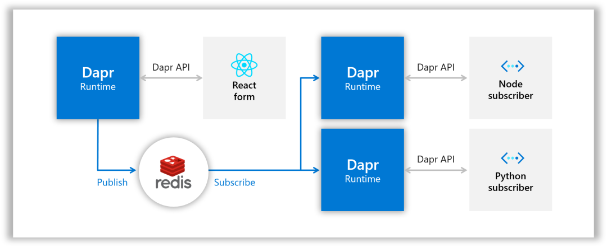
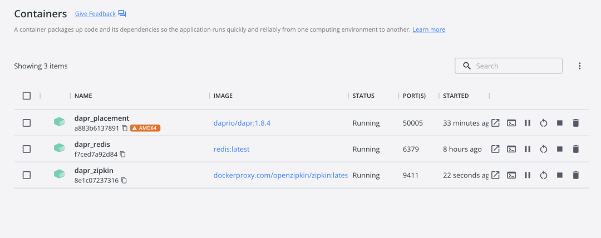
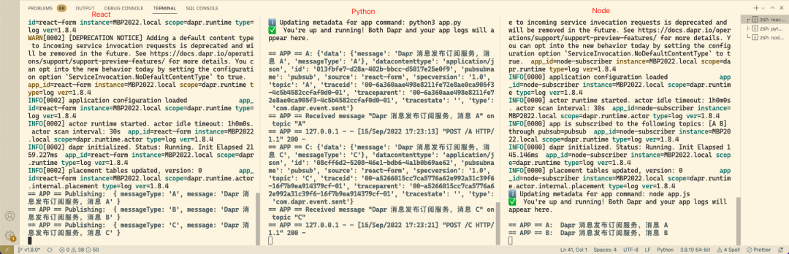
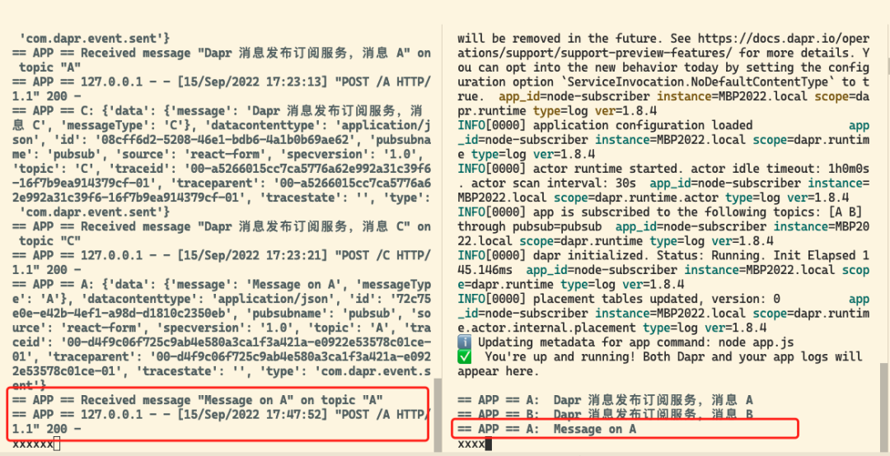
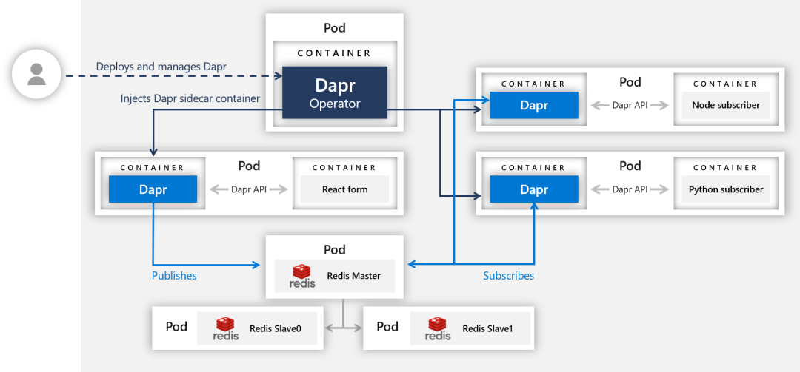
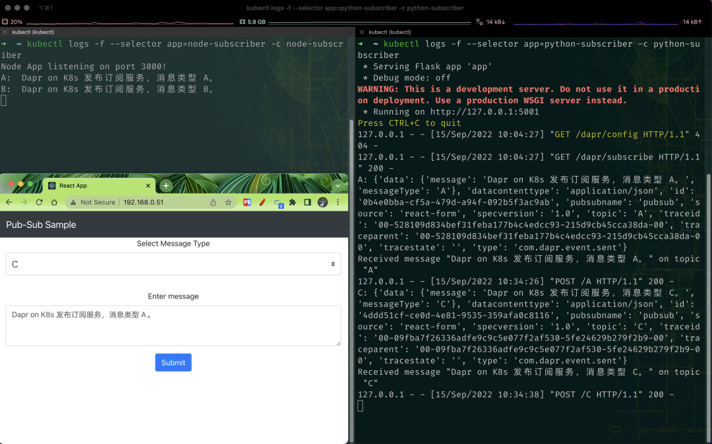
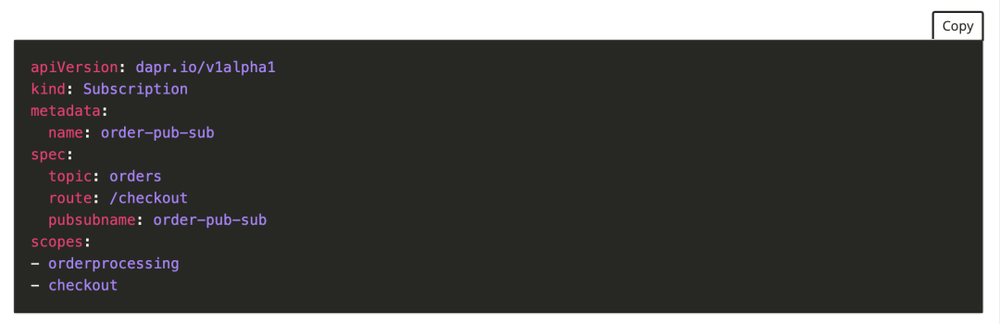

2 Dapr 入门教程之发布订阅
本节我们来了解如何启用 Dapr 的发布/订阅模式，发布者将生成特定主题的消息，而订阅者将监听特定主题的信息。
- 使用发布服务，开发人员可以重复发布消息到一个主题上。
- Pub/sub 组件对这些消息进行排队处理。
- 该主题订阅者将从队列中获取到消息并处理他们。
接下来我们使用的这个示例包含一个发布者：
- React 前端消息生成器
包含另外 3 个消息订阅者：
- Node.js 订阅者
- Python 订阅者
- C# 订阅者
Dapr 使用可插拔的消息总线来支持发布-订阅，并将消息传递给 CloudEvents（一个 CNCF 项目） 作为通用的事件信封格式，以提高连接服务的互操作性。
我们这里将使用 Redis Streams（在 Redis version = > 5 中启用），当然也可以使用 RabbitMQ、Kafka 等中间件。下图是用来说明组件之间是如何在本地模式下互相连接的。

dapr pub/sub
本地初始化
Dapr 允许你将相同的微服务从本地机器部署到云环境中去，这里为了和大家说明这种便利性，我们先在本地部署这个实例项目，然后再将其部署到 Kubernetes 环境中去。
要在本地使用 Dapr 服务，需要先在本地初始化 Dapr：
$ dapr init
由于某些网络原因使用上面的命令可能并不能初始化成功，我们可以使用离线的方式进行安装，前往 https://github.com/dapr/installer-bundle/releases 下载对应系统的 Bundle 👝 包，然后解压，比如我这里是 Mac M1，使用下面的命令下载
$ wget https://github.com/dapr/installer-bundle/releases/download/v1.9.0%2B1/daprbundle_darwin_amd64.tar.gz
$ tar -xvf daprbundle_darwin_arm64.tar.gz
x daprbundle/
x daprbundle/README.md
x daprbundle/dapr
x daprbundle/details.json
x daprbundle/dist/
x daprbundle/dist/daprd_darwin_arm64.tar.gz
x daprbundle/dist/dashboard_darwin_arm64.tar.gz
x daprbundle/dist/placement_darwin_arm64.tar.gz
x daprbundle/docker/
x daprbundle/docker/daprio-dapr-1.8.4.tar.gz
然后我们可以重新使用下面的命令进行初始化：
dapr init --from-dir daprbundle/
⌛ Making the jump to hyperspace...
⚠ Local bundle installation using --from-dir flag is currently a preview feature and is subject to change. It is only available from CLI version 1.7 onwards.
ℹ️ Installing runtime version 1.9.0
❌ Extracting binaries and setting up components...
❌ dapr_placement container exists or is running. please run `dapr uninstall` first before running `dapr init`
$ dapr uninstall
ℹ️ Removing Dapr from your machine...
ℹ️ Removing directory: /Users/i515190/.dapr/bin
ℹ️ Removing container: dapr_placement
✅ Dapr has been removed successfully
$ dapr init --from-dir daprbundle/
⌛ Making the jump to hyperspace...
⚠ Local bundle installation using --from-dir flag is currently a preview feature and is subject to change. It is only available from CLI version 1.7 onwards.
ℹ️ Installing runtime version 1.9.0
↘ Extracting binaries and setting up components...
Dapr runtime installed to /Users/i515190/.dapr/bin, you may run the following to add it to your path if you want to run daprd directly:
export PATH=$PATH:/Users/i515190/.dapr/bin
→ Extracting binaries and setting up components... Loaded image: daprio/dapr:1.9.0
✅ Extracting binaries and setting up components...
✅ Extracted binaries and completed components set up.
ℹ️ daprd binary has been installed to /Users/i515190/.dapr/bin.
ℹ️ dapr_placement container is running.
ℹ️ Use `docker ps` to check running containers.
✅ Success! Dapr is up and running. To get started, go here: https://aka.ms/dapr-getting-started
$ dapr version
CLI version: 1.9.1
Runtime version: 1.9.0
默认会启用 zipkin 这个 tracing 服务，使用上面的命令初始化如果没有对应的容器，则可以使用
docker run --name dapr_zipkin -d -p 9411:9411 dockerproxy.com/openzipkin/zipkin启动该服务。同样也需要运行一个 Redis 服务：docker run --name dapr_redis -d -p 6379:6379 dockerproxy.com/redislabs/rejson。

消息订阅服务
这里我们还是使用前面使用的 quickstarts 这个项目，克隆项目到本地：
git clone [-b <dapr_version_tag>] https://github.com/dapr/quickstarts.git
进入 tutorials/pub_sub 目录下面：
➜ pub-sub git:(622b7d9) ls
README.md deploy makefile message_b.json node-subscriber react-form
csharp-subscriber img message_a.json message_c.json python-subscriber
运行 Node 消息订阅服务
首先我们使用 Dapr 运行 node 消息订阅服务，导航到 node-subscriber 目录，安装依赖：
cd /dapr/quickstarts/tutorials/pub-sub/deploy
$ cd node-subscriber
$ npm install # 或者 yarn
$ npm install
added 57 packages, and audited 58 packages in 6m
7 packages are looking for funding
run `npm fund` for details
found 0 vulnerabilities
执行如下所示命令运行 node 消息订阅服务：
dapr run --app-id node-subscriber --app-port 3000 node app.js
ℹ️ Starting Dapr with id node-subscriber. HTTP Port: 57515. gRPC Port: 57516
INFO[0000] starting Dapr Runtime -- version 1.9.0 -- commit fdce5f1f1b76012291c888113169aee845f25ef8 app_id=node-subscriber instance=C02S710EG8WM scope=dapr.runtime type=log ver=1.9.0
INFO[0000] log level set to: info app_id=node-
...
INFO[0000] app id: node-subscriber
...
上面命令中的 app-id 是微服务的唯一标识符，--app-port 是 Node 应用程序运行的端口，最后，运行应用程序的命令是 node app.js。
当看到 == APP == Listening on port 8080! 这样的日志时，表示应用启动成功了。然后我们就可以在浏览器中访问 http://localhost:8080 访问前端应用了。
如现在我们选择消息类型 A，然后随便输入一些消息内容，点击 Submit 发送，然后观察上面的 Node 和 Python 这两个消息订阅者服务的日志。
选择一个主题，输入一些文字，然后发送一条信息！观察通过你们各自的 Dapr 的日志

注意，Node 订阅者接收类型为 A 和 B 的消息，而 Python 订阅者接收类型为 A和 C 的消息，所以注意每个控制台窗口的日志显示。
此外 Dapr CLI 提供了一个机制来发布消息用于测试，比如我们可以使用如下命令来发布一条消息：
$ dapr publish --publish-app-id react-form --pubsub pubsub --topic A --data-file message_a.json

到这里我们就完成了使用 Dapr 来进行消息订阅发布的功能演示。
在 Kubernetes 中运行
上面我们是将演示服务在本地部署的，我们知道使用 Dapr 开发的服务是和平台没关系的，可以很轻松迁移到云环境，比如现在我们再将上面的示例应用部署到 Kubernetes 集群中。
要在 Kubernetes 中运行相同的代码，首先需要设置 Redis 存储，然后部署微服务，将使用相同的微服务，但最终架构有所不同：

前面我们已经使用 Helm 安装了 bitnami 下面的 redis 应用：
$ helm repo add bitnami https://charts.bitnami.com/bitnami
$ helm repo update
$ helm install redis bitnami/redis
有了 Redis 服务过后，接着我们需要创建一个发布订阅的 Component 组件，前文是创建的一个使用 Redis 的状态管理组件，对应的组件资源清单如下所示：
# deploy/redis.yaml
apiVersion: dapr.io/v1alpha1
kind: Component
metadata:
name: pubsub
spec:
type: pubsub.redis
version: v1
metadata:
# These settings will work out of the box if you use `helm install
# bitnami/redis`. If you have your own setup, replace
# `redis-master:6379` with your own Redis master address, and the
# Redis password with your own Secret's name. For more information,
# see https://docs.dapr.io/operations/components/component-secrets .
- name: redisHost
value: redis-master:6379
- name: redisPassword
secretKeyRef:
name: redis
key: redis-password
auth:
secretStore: kubernetes
直接应用上面的资源清单即可：
cd dapr/quickstarts/tutorials/pub-sub/deploy
$ kubectl apply -f deploy/redis.yaml
component.dapr.io/pubsub created
$ kubectl get components
NAME AGE
pubsub 26s
statestore 45h
现在我们就有了一个使用 Redis 为中间件的发布订阅组件了，注意上面对象的类型为 pubsub.redis。
dapr dashboard -k

cd dapr/quickstarts/tutorials/pub-sub/deploy
$ kubectl apply -f node-subscriber.yaml
$ kubectl apply -f python-subscriber.yaml
$ kubectl apply -f deploy/react-form.yaml
部署后查看 Pod 的状态：
react-form 这个微服务会通过一个 LoadBalancer 类型的 Service 来对外暴露服务：
$ kubectl get svc
NAME TYPE CLUSTER-IP EXTERNAL-IP PORT(S) AGE
kubernetes ClusterIP 10.96.0.1 <none> 443/TCP 12d
node-subscriber-dapr ClusterIP None <none> 80/TCP,50001/TCP,50002/TCP,9090/TCP 16m
nodeapp LoadBalancer 10.106.97.78 localhost 80:30822/TCP 4d1h
nodeapp-dapr ClusterIP None <none> 80/TCP,50001/TCP,50002/TCP,9090/TCP 4d1h
python-subscriber-dapr ClusterIP None <none> 80/TCP,50001/TCP,50002/TCP,9090/TCP 16m
pythonapp-dapr ClusterIP None <none> 80/TCP,50001/TCP,50002/TCP,9090/TCP 3d13h
react-form LoadBalancer 10.110.67.46 <pending> 80:31250/TCP 13m
react-form-dapr ClusterIP None <none> 80/TCP,50001/TCP,50002/TCP,9090/TCP 13m
redis-headless ClusterIP None <none> 6379/TCP 4d2h
redis-master ClusterIP 10.100.189.63 <none> 6379/TCP 4d2h
redis-replicas ClusterIP 10.111.120.168 <none> 6379/TCP
然后我们就可以通过分配的 EXTERNAL-IP 访问前端服务了。同样在前端页面发送几个不同的消息通知，然后使用 kubectl logs 观察 Node 和 Python 订阅服务的日志。
$ kubectl logs --selector app=node-subscriber -c node-subscriber
$ kubectl logs --selector app=python-subscriber -c python-subscriber

如何工作
现在，我们已经在本地和 Kubernetes 中运行了订阅发布示例应用，接下来我们来分析下这是如何工作的。该应用程序分为两个订阅者和一个发布者
Node 消息订阅服务
重新导航到 node-scriber 目录并查看 Node.js 订阅者代码 app.js，该服务通过 Express 暴露了三个 API 端点。第一个是 GET 端点:
app.get("/dapr/subscribe", (_req, res) => {
res.json([
{
pubsubname: "pubsub",
topic: "A",
route: "A",
},
{
pubsubname: "pubsub",
topic: "B",
route: "B",
},
]);
});
该段代码是告诉 Dapr 要订阅 pubsub 这个组件的哪些主题，其中的 route 表示使用路由到那个端点来处理消息，当部署（本地或 Kubernetes）时，Dapr 将调用服务以确定它是否订阅了任何内容。其他两个端点是后端点：
app.post("/A", (req, res) => {
console.log("A: ", req.body.data.message);
res.sendStatus(200);
});
app.post("/B", (req, res) => {
console.log("B: ", req.body.data.message);
res.sendStatus(200);
});
这两个端点处理来自每个主题类型的消息，我们这里只是记录消息，当然在更复杂的应用程序中，这里就是需要处理业务逻辑的地方了。
此外我们也可以直接通过创建一个 Subscription 的对象来声明在哪些服务里面来订阅组件中的哪些主题。

Python 消息订阅服务
同样导航到 python-subscriber 目录，查看 Python 订阅服务的代码文件 app.py。与 Node.js 订阅者一样，我们暴露了三个 API 端点，只是这里使用的是 flask，第一个是 GET 端点:
@app.route('/dapr/subscribe', methods=['GET'])
def subscribe():
subscriptions = [{
'pubsubname': 'pubsub', 'topic': 'A', 'route': 'A'
}, {
'pubsubname': 'pubsub', 'topic': 'C', 'route': 'C'
}]
return jsonify(subscriptions)
同样的方式，这是告诉 Dapr 要订阅 pubsub 组件的哪些主题，这里我们订阅的组件名为 pubsub 的，主题为 A 和 C，这些主题的消息通过其他两个路由进行处理
@app.route('/A', methods=['POST'])
def a_subscriber():
print(f'A: {request.json}', flush=True)
print('Received message "{}" on topic "{}"'.format(request.json['data']['message'], request.json['topic']), flush=True)
return json.dumps({'success':True}), 200, {'ContentType':'application/json'}
@app.route('/C', methods=['POST'])
def c_subscriber():
print(f'C: {request.json}', flush=True)
print('Received message "{}" on topic "{}"'.format(request.json['data']['message'], request.json['topic']), flush=True)
return json.dumps({'success':True}), 200, {'ContentType':'application/json'}
React 前端应用
上面是两个订阅服务，接下来查看下发布者，我们的发布者分为客户端和服务器。
客户端是一个简单的单页 React 应用程序，使用 Create React App 启动，相关的客户端代码位于react-form/client/src/MessageForm.js，当用户提交表单时，将使用最新的聚合 JSON 数据更新 React 状态。默认情况下，数据设置为：
{
messageType: "A",
message: ""
};
提交表单后，聚合的 JSON 数据将发送到服务器：
fetch("/publish", {
headers: {
Accept: "application/json",
"Content-Type": "application/json",
},
method: "POST",
body: JSON.stringify(this.state),
});
服务端是一个典型的 express 应用程序，它暴露了一个 POST 端点：/publish。这样可以从客户端接收请求，并根据 Dapr 发布它们。Express 内置的 JSON 中间件函数用于解析传入请求中的 JSON：
app.use(express.json());
这样我们可以获取到提交的 messageType，可以确定使用哪个主题来发布消息。要使用 Dapr 来发布消息，同样也是直接使用 Dapr 提供的 API 端点 http://localhost:<DAPR_URL>/publish/<PUBSUB_NAME>/<TOPIC> 即可，根据获取到的数据构建 Dapr 消息发布的 URL，提交 JSON 数据，POST 请求还需要在成功完成后返回响应中的成功代码
const publishUrl = `${daprUrl}/publish/${pubsubName}/${req.body?.messageType}`;
await axios.post(publishUrl, req.body);
return res.sendStatus(200)
daprUrl 的地址所在的端口可以用下面的代码来获取：
const daprUrl = `http://localhost:${process.env.DAPR_HTTP_PORT || 3500}/v1.0`;
默认情况下，Dapr 在 3500 上运行，但如果我们在本地运行 Dapr 并将其设置为其他端口（使用 CLI run 命令中的 --app-port 标志），则该端口将作为环境变量注入应用程序。
此外服务端还通过将默认主页 /路由请求转发到构建的客户端代码来托管 React 应用程序本身：
app.get("/", function (_req, res) {
res.sendFile(path.join(__dirname, "client/build", "index.html"));
});
所以我们可以直接通过服务端来访问到前端页面。
发布-订阅模式是我们微服务开发中非常重要的一个模式，可以用来实现高可伸缩性和松耦合。发布订阅通常用于需要高度可伸缩的大型应用程序，发布和订阅应用程序通常比传统的 client/server 应用程序具有更好的伸缩性。Pub-sub 允许我们完全解耦组件，发布者不必知道他们的任何订阅者，订阅者也不必知道发布者。
这使得开发人员可以编写更精简的微服务，而不会直接依赖彼此。